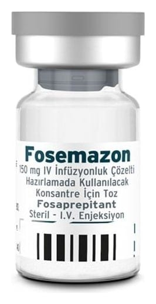

Fosemazon 150 mg I.V. İnfüzyonluk Çözelti Hazirlamada Kullanilacak Konsantre İçin Toz, 1 Adet

Ne için kullanılır
KT · Bölüm 1FOSEMAZON vücudunuzda aprepitanta dönüştürülen aktif fosaprepitant maddesini içerir. Fosaprepitant, aprepitantın ön ilacıdır ve intravenöz olarak uygulandığında hızla aprepitanta dönüşür. Aprepitant “nörokinin 1 (NK
) reseptör antagonistleri” olarak adlandırılan bir ilaç grubuna aittir. Beyinde mide bulantısı ve kusmayı kontrol eden özel bir alan vardır. FOSEMAZON o bölgedeki sinyalleri engelleyerek çalışır, böylece bulantı ve kusmayı azaltır.
FOSEMAZON, yetişkinlerde, ergenlerde ve 6 ay veya daha büyük yaştaki çocuklarda, güçlü ve orta dereceli bulantı ve kusmanın tetikleyicisi olan kemoterapinin (kanser tedavisi) neden olduğu bulantı ve kusmayı önlemek için diğer ilaçlar ile birlikte kullanılır.
FOSEMAZON infüzyon için liyofilize toz, renksiz cam flakon içinde beyaz veya hemen hemen beyaz liyofilize tozdur.